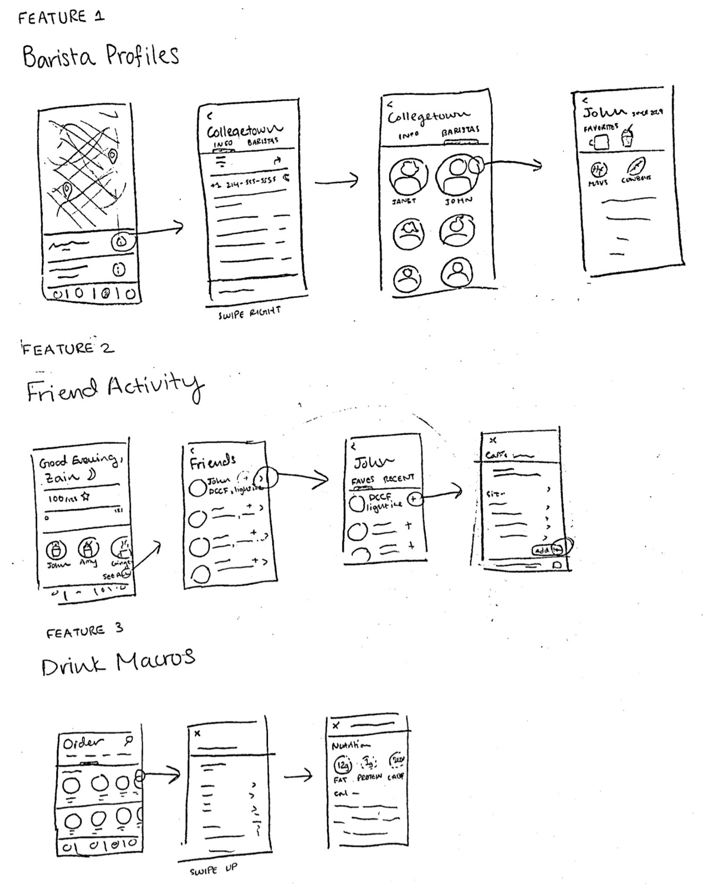
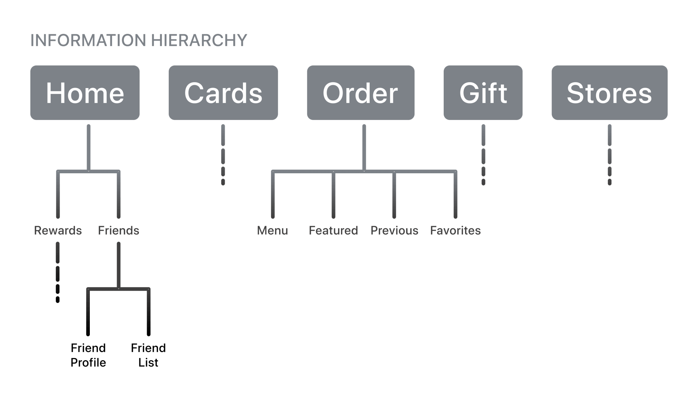
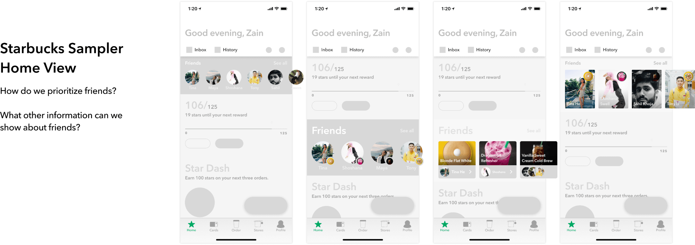
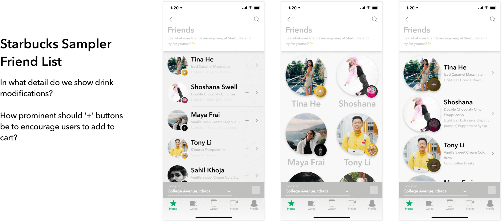
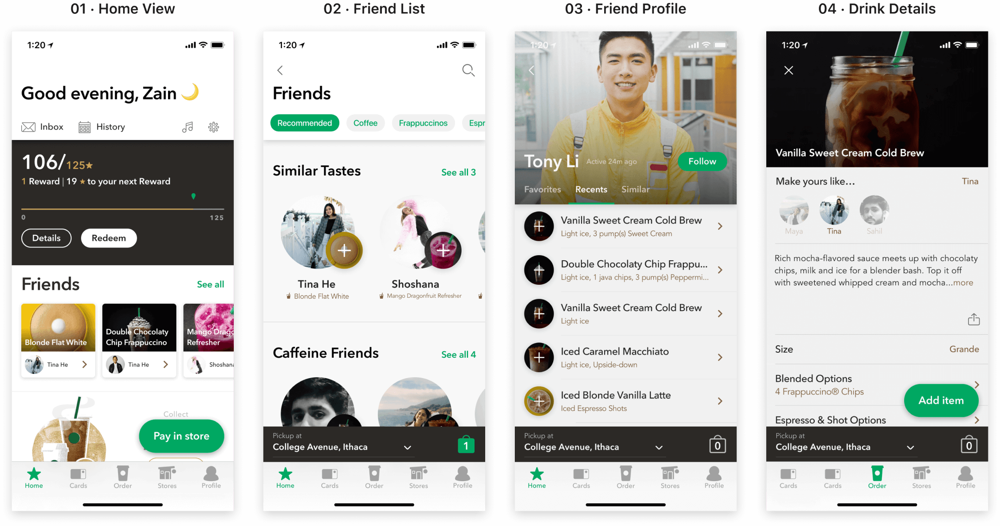

A feature allowing users to share modified favorites with friends and encouraging users to try new drinks.
User Interface Designer
User Experience Designer
January 2019 to May 2019
Knowing someone’s coffee order these days is akin to knowing the songs on someone’s iPod in the early 2000s. Starbucks started as a simple coffee shop, but its menu has grown to hundreds of drinks, each customized to a specific customer.
The Starbucks app today is useful way for customers to create, favorite, and order drinks quickly. It also suggests new drinks, but these are often met with ridicule or controversy. People want to find new drinks and foods that they will enjoy, but they can’t because:
I originally thought users avoided creating customized drinks because the options looked confusing. My mind changed after bothering people who were working in some Starbucks stores in suburban Chicago.
My user research showed that the drink ordering process on the Starbucks app was fine. Users knew how to navigate the customization of a drink and how their new drink would taste without a hitch. The real problem was that users didn’t trust themselves enough to make a custom drink and be confident that they would like it. It was cost-prohibitive to try a new drink or a customized old drink if it led to a user cringing every time they took a sip. So a couple friends and I went out and got some sticky notes.
I recruited a couple friends to help me out. After blowing through about two hundred sticky notes, we identified two main areas of improvement:
Making Customizations Easier: How might we make it easy for users to share and utilize other user-created custom drinks?
Making Better Recommendations: How might we help users find drinks that are similar in taste to drinks they already like?
We explored some solutions to these questions in low-fidelity drawings:
Looking at the pros and cons of each solution, I decided to go with Friend Activity since it seemed the most feasible and had the greatest impact. Going forward, I made sure to design the feature to accomplish the goal but otherwise stay out of the way of the app’s main purpose: ordering drinks.
Using my drawn user flows for reference, I began to map out the information hierarchy. This information hierarchy would show the Friend Activity feature. I wanted to make sure that the feature was well-seen, but also emphasize that it lived separately from the app’s many other functions.
The entry point for Friend Activity would be from the ‘Home’ screen. Although the ‘Home’ tab offered information about rewards and new drinks, users usually immediately tapped the ‘Order’ tab to find a drink on the current app. If friend profiles were on the front page, it might help create some familiarity with the user and increase time spent.
In each page, the focus tends to switch off between the user’s friend picture and the drink. For each page, I looked at user research to determine whether I should focus on user profiles or drink details.
To begin drawing a new component onto an existing screen, I had to make sure current designs were consistent. I wrote out some visual problems I found with the app and made a note of them when iterating on a final flow.
Talking to users, I was pleasantly surprised by how many times I heard, “I don’t have any problems, I love the app.” Starbucks has done a great job of helping users to order their favorite drinks. I hope Friend Activity can further this by helping users find new drinks to love and find new connections with friends.
There are a lot more decisions and detail that went into this project than I mentioned here. If you’d like to read more, check out the Medium article.